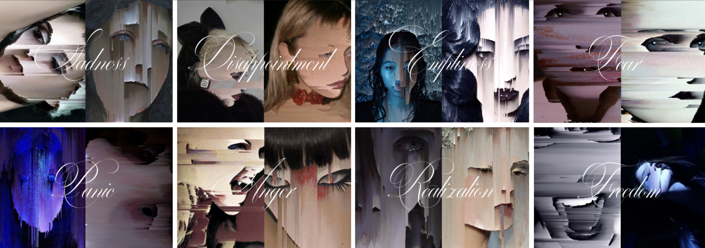

DIGITAL EMOTIONS
a project blending code and publishing, centered around the theme of glitch.
the edition traces my graphic experiments, starting with the general theme of clothing and the human silhouette, gradually narrowing down to the face, and ultimately, emotions.
the final pages visually depict an emotional trajectory, moving from sadness to fear, passing through anger, and finally culminating in freedom.


